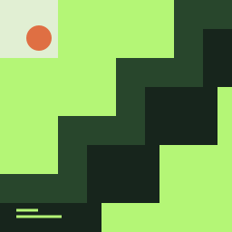

Music stays.
Your terminal
moves on.
A little Winamp energy.
A lot more terminal freedom.
Play your local music. Close the interface. Keep the soundtrack. A detachable music player for life inside tmux.
Make room for your music
- 01After Hours
- 02Soft Focus
- 03One More Commit
Interface detached. Music keeps playing.
Your pane.
Yours again.
Go on. Close the interface.
The soundtrack doesn’t need a window.
Interactive simulation. No audio plays in your browser.
Your soundtrack.
Not another window.
We loved the little player that lived on our desktop. These days, we live in a terminal. The music should feel at home here, too.
Album covers come through in high resolution with Sixel or Kitty graphics, automatically detected when you attach. Ghostty + tmux uses Kitty; Sixel in tmux requires support from both tmux and the outer terminal. Color halfblocks keep the artwork visible when pixel graphics aren’t available.
Make it feel like your terminal. Choose from nine color themes, including cozy Catppuccin Mocha, light Latte, Rosé Pine, and the original green Classic shown above. Press t to preview, then Enter to save for your next attachment. Mocha is the default.
$ vtampDrop in.
A server starts if you need one. Your library, queue, and album art are right there.
qStep out.
The interface closes. The server keeps playing. Get your pane back for the work in front of you.
$ vtampPick up.
Attach again from another pane. Same music. Same queue. Exactly where it is now.
One shared queue. As many interfaces as you need.
Good with keys.
Great with commands.
Skip a track without opening the player. Let a script pause the music. Give your agent a straightforward command, with a straightforward JSON reply.
Local files. A local socket. No account, API key, or cloud in the middle.
vtamp nextChange the mood.vtamp pauseA moment of quiet.vtamp volume 35Room to think.$ vtamp status --json{
"version": 1,
"ok": true,
"data": {
"status": "playing",
"position_ms": 102000,
"volume": 35
}
}Response excerpt · full state includes the queue and current track.Press play.
Then get on with it.
Bring a folder of music and a terminal.
vtamp takes care of the rest.
macOS · Rust 1.90+ · local audio files
AAC / ALAC m4a, MP3, FLAC, WAV, Ogg Vorbis
From your vtamp source checkout:
# Install the player
cargo install --locked --path .
# Register your music folder
vtamp library add ~/Music
# Attach. Pick a track. Press Enter.
vtampNo permanent pane required. q to detach.